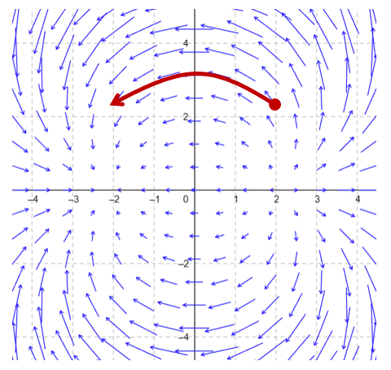
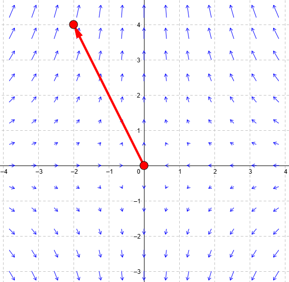

Lesson 39: Line Integrals and Work
Here we see how to compute the work done by a vector field \(\mathbf{F}\) in moving a particle along a curve \(C\).

Consider the vector field \(\mathbf{F}(x, y) = P(x, y)\,\mathbf{i} + Q(x, y)\,\mathbf{j}\). Suppose \(C\) is a smooth curve traced out by the vector function \(\mathbf{r}(t)\). The work \(W\) done by the vector field in moving a particle along \(C\) is below.
Work
This is connected to the form below.
Write the curve as \(\mathbf{r} = \langle x, y \rangle\). Then its differential is \(d\mathbf{r} = \langle dx, dy \rangle\), so the dot product is:
To evaluate either form, write everything in terms of \(t\). Since \(d\mathbf{r} = \mathbf{r}'(t)\,dt\):
An Example
Consider the vector field below. Suppose \(C\) is the line segment from the point \((0, 0)\) to the point \((-2, 4)\). Find the work done by this vector field in moving a particle along \(C\).

Parametrize the segment, and find the derivative.
Along the curve, \(x = -2t\) and \(y = 4t\).
An Example
Consider the vector field in three-dimensional space below. Suppose \(C\) is the curve traced out by \(\mathbf{r}(t) = t\,\mathbf{i} + t^2\,\mathbf{j} + 6\,\mathbf{k}\). Find the work done by this vector field in moving a particle along \(C\) over \(0 \le t \le 5\).
Along the curve, \(x = t\), \(y = t^2\), and \(z = 6\).